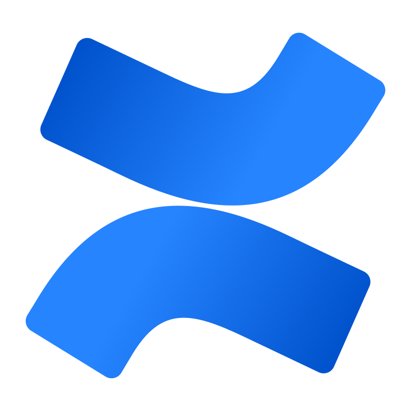

UX/UI-Design · User Flows · KI-gestützte Entwicklung
Von komplexen Abläufen zu verständlichen und funktionalen Produkten.
Plattform für Fahrzeugbestandsprüfungen
Banken und Leasinggesellschaften | Enterprise-SaaS | 2024
Herausforderung
Banken und Leasinggesellschaften benötigten einen Überblick über den Zustand und Standort ihrer Fahrzeuge sowie den Fortschritt der Prüfungen in verschiedenen Autohäusern.
Mein Beitrag
Ich entwarf Dashboards, Funktionen zur Verwaltung und Zuweisung von Prüffällen sowie Detailansichten für Prüfergebnisse und die Prüfhistorie einzelner Fahrzeuge.
Ergebnis
Es entstanden Oberflächenentwürfe und Prototypen zur Koordination von Prüfungen, zur Nachverfolgung des Prüffortschritts und zur übersichtlichen Auswertung der Ergebnisse.
Ablauf der Fahrzeugbestandsprüfung
Bank
Koordinator
Prüfer
Fahrzeug
KI-gestützte Schadenserkennung
Über die Plattform
Die Plattform richtet sich an Banken und Leasinggesellschaften, deren Fahrzeuge in verschiedenen Autohäusern stehen und die einen Überblick über deren Zustand benötigen.
Die Plattform unterstützt den gesamten Prüfprozess: Der Koordinator plant die Prüfung und weist sie zu, der Prüfer dokumentiert vor Ort den Fahrzeugzustand und Schäden, wobei KI die automatische Schadenserkennung unterstützt. Die Bank kann Zustand, Prüfhistorie und Ergebnisse jedes Fahrzeugs zentral einsehen und darauf aufbauend Entscheidungen treffen. Zuvor waren die Berichte auf verschiedene Standorte und Systeme verteilt.
Herausforderung
Eine Fahrzeugprüfung ist ein komplexer Prozess mit mehreren Beteiligten. Er reicht von der Bank über die Koordination bis zur Prüfung vor Ort am Fahrzeug. Jede Rolle hat eigene Verantwortlichkeiten und Informationsbedürfnisse. Die zentrale Herausforderung meiner Arbeit bestand darin, die Verwaltung der Prüffälle übersichtlich zu gestalten und die Prüfergebnisse entsprechend den Bedürfnissen der jeweiligen Nutzerrollen zugänglich zu machen.
Dazu mussten umfangreiche Fahrzeugdaten, einzelne Prüfungen und die Prüfhistorie sinnvoll strukturiert werden. Koordinatoren benötigten eine einfache Möglichkeit, Prüffälle zuzuweisen und ihren Fortschritt zu verfolgen. Banken brauchten einen umfassenden Überblick über den Fahrzeugzustand und die Prüfergebnisse.
Mein Beitrag
Als UX/UI-Designer konzentrierte ich mich auf den Teil der Plattform, der der Verwaltung von Prüffällen und der Einsicht in Prüfergebnisse dient. Dafür konzipierte ich User Flows, die Informationsarchitektur und die Benutzeroberflächen. Die Anwendung zur Erfassung von Fahrzeugdaten und Schäden während der Prüfung gehörte nicht zu meinem Aufgabenbereich.
Meine Aufgaben umfassten:
Gestaltung von Arbeitsabläufen zur Verwaltung und Koordination von Prüfungen
Strukturierung von Dashboards und Visualisierung von Daten
Detailansichten der Fahrzeugprüfungen und ihrer Historie
Verwaltung, Zuweisung und Nachverfolgung von Prüffällen
Gestaltung von Statusanzeigen, Filtern und der Navigation innerhalb der Daten
Ich arbeitete eng mit dem Product Owner zusammen, um fachliche Anforderungen zu verstehen, Prüfinformationen zu strukturieren und daraus konkrete User Flows und umsetzungsreife Oberflächenentwürfe abzuleiten.
Designprozess
Zunächst machte ich mich mit dem gesamten Prüfzyklus vertraut und analysierte, wie Informationen und Aufgaben über die verschiedenen Nutzerrollen und Prozessphasen hinweg zusammenhängen.
Auf dieser Grundlage entwarf ich User Flows und die Informationshierarchie für die Fallverwaltung, die Nachverfolgung des Prüffortschritts und die Einsicht in die Ergebnisse.
Im regelmäßigen Austausch mit dem Product Owner entwickelte ich meine Entwürfe iterativ zu Prototypen und umsetzungsreifen Designs für das Entwicklungsteam weiter.
Zentrale Designentscheidungen
Informationshierarchie – von der Übersicht zum Detail
Eine Vielzahl von Informationen musste zugänglich gemacht werden: vom aktuellen Fahrzeugzustand und den Prüfergebnissen bis hin zu dokumentierten Schäden und der Prüfhistorie.
Daher strukturierte ich die Oberfläche so, dass sie von Übersichten zu den Details einzelner Fahrzeuge und Prüfungen führt. Nutzer können sich schnell orientieren und bei Bedarf weitere Informationen aufrufen.
Rollenspezifische Benutzeroberflächen
Bei der Gestaltung der Übersichten und der Fallverwaltung berücksichtigte ich die unterschiedlichen Bedürfnisse der Koordinatoren und Mitarbeiter der Banken.
Je nach Rolle waren unterschiedliche Detailgrade, Aktionen und Informationen erforderlich. Entsprechend passte ich die Inhalte der Ansichten und die verfügbaren Funktionen an.
Ergebnis
Die Entwürfe ermöglichen die Verwaltung und Zuweisung von Prüffällen, die Nachverfolgung des Prüffortschritts sowie die Einsicht in Ergebnisse, dokumentierte Schäden und die Prüfhistorie.
Für diesen Teil der Plattform erarbeitete ich aufeinander abgestimmte Arbeitsabläufe, Prototypen und Oberflächenentwürfe als Grundlage für die Umsetzung. Diese konkretisierte ich im laufenden Austausch mit dem Product Owner. Die Entwürfe wurden anschließend implementiert, und die Plattform ist heute im Einsatz.
Meine Arbeitsweise – vom Verstehen bis zum Launch
Verstehen
Ich mache mich mit dem Produkt, den Arbeitsabläufen, den Nutzerbedürfnissen und den Geschäftszielen vertraut.
Definieren
Ich identifiziere Probleme, definiere Ziele und setze gemeinsam mit den Beteiligten Prioritäten.
Gestalten & validieren
Ich entwerfe User Flows, Oberflächen und Prototypen, die ich überprüfe und iterativ verbessere.
Umsetzen
Ich begleite die Implementierung mit dem Entwicklungsteam oder entwickle Lösungen eigenständig mit KI-Unterstützung.
Launchen & verbessern
Ich prüfe die Funktionalität und verbessere die Lösung anhand von Feedback und Erfahrungen aus dem laufenden Betrieb.
Plattform für das Management des Kundenlebenszyklus in Autohäusern
Automobilbranche | B2B-SaaS | 2023–2025
Herausforderung
Die bestehende Plattform unterstützte Teams in Autohäusern über den gesamten Kundenlebenszyklus hinweg. Arbeitsabläufe, Benutzerfreundlichkeit und Informationsstruktur mussten kontinuierlich verbessert werden, ohne die Konsistenz der Oberflächen über mehrere zusammengehörige Anwendungen hinweg zu beeinträchtigen.
Mein Beitrag
Ich überarbeitete den Nachrichtenversand an Kunden, konzipierte Verbesserungen für den Kalender und die Aktivitätenverwaltung und optimierte Übersichten und Formulare für die Bearbeitung von Leads. Zudem verbesserte ich Tabellenansichten und wirkte an der Entwicklung wiederverwendbarer UI-Muster mit. Dabei arbeitete ich mit Product Ownern und Entwicklern zusammen.
Ergebnis
Viele meiner Entwürfe wurden anschließend umgesetzt. Sie vereinfachten die Kundenkommunikation und machten die Arbeit mit Kalendern, Aktivitäten, Leads und Tabellen übersichtlicher.
Kundenlebenszyklus im Autohaus
Lead-Identifikation
Kundenkontakt
Bewertung des Fahrzeugs zur Inzahlungnahme
Angebotserstellung
Angebotsverwaltung
Online-Vertragsabschluss
Fahrzeugübergabe
Service & After-Sales
Über die Plattform
Lead Management war Teil eines Ökosystems aus drei Anwendungen, die den Kundenlebenszyklus im Autohaus unterstützten. Die erste Anwendung ermittelte anhand der Fahrzeuglaufleistung, wann sich ein Wechsel zu einem neuen Fahrzeug für den Kunden wirtschaftlich lohnen würde, und identifizierte so neue Verkaufschancen.
Die Anwendung Lead Management, an der ich arbeitete, unterstützte Vertriebsteams bei der Bearbeitung von Leads – vom ersten Kundenkontakt über die Bewertung des Fahrzeugs zur Inzahlungnahme und die Erstellung und Verwaltung von Angeboten bis hin zum Vertragsabschluss und zur Fahrzeugübergabe.
An den Vertriebsprozess schloss sich eine Serviceanwendung an. Anhand der Fahrzeugidentifikation ließen sich benötigte Ersatzteile und deren Preise ermitteln und Reparaturangebote einschließlich Arbeitskosten erstellen.
Herausforderung
Lead Management war bereits ein etabliertes Produkt, das kontinuierlich weiterentwickelt werden musste. Einige Arbeitsabläufe enthielten unnötige Schritte oder waren auf mehrere Ansichten und Dialoge verteilt.
Die Herausforderung bestand darin, diese Abläufe zu vereinfachen, die Orientierung in umfangreichen Informationen zu erleichtern, technische Rahmenbedingungen einzuhalten und die Konsistenz zwischen den Anwendungen zu wahren.
Mein Beitrag
Als UX/UI-Designer wirkte ich an der langfristigen Weiterentwicklung der Anwendung mit. Impulse für Änderungen ergaben sich vor allem aus meiner eigenen Produktanalyse, außerdem aus dem Austausch mit Kollegen und in geringerem Umfang aus Kundenfeedback.
Meine Aufgaben umfassten:
Analyse von Arbeitsabläufen und Anstoßen von Verbesserungen
Gestaltung von User Flows und Funktionen für Kundenkommunikation, Kalender und Aktivitätenverwaltung
Optimierung von Übersichten, Formularen, Lead-Detailansichten und Tabellen
Gestaltung wiederverwendbarer Komponenten und UI-Muster
Erstellung interaktiver Prototypen in Figma und Durchführung von Nutzertests
Begleitung und Überprüfung der technischen Umsetzung sowie anschließende Anpassungen
Designprozess
Bei der Arbeit mit der bestehenden Anwendung analysierte ich die Arbeitsabläufe aus Nutzersicht. Identifizierte Probleme überprüfte ich bei Bedarf in Nutzertests mit freiwillig teilnehmenden Kollegen aus dem Unternehmen.
Ich gab den Teilnehmenden konkrete Aufgaben und bat sie, ihre Gedanken und Entscheidungen während der Bearbeitung laut zu äußern (Think-Aloud-Methode). Beobachtungen und festgestellte Probleme dokumentierte ich in einem Rainbow Sheet und bewertete ihren Schweregrad. Wenn Teilnehmende sich nicht zurechtfanden oder eine Aufgabe nicht abschließen konnten, suchte ich nach geeigneteren Lösungen.
Anregungen und Entwürfe besprach ich mit Product Ownern und Entwicklern. Interaktive Prototypen testete ich und passte sie anhand der Ergebnisse an. Nach der Übergabe an das Entwicklungsteam beteiligte ich mich an der Überprüfung der Umsetzung und Funktionalität sowie an weiteren Verbesserungen.
Vereinfachung des Nachrichtenversands an Kunden
Bei der Arbeit mit der Anwendung fiel mir ein unnötig komplizierter Ablauf beim Nachrichtenversand auf. Aus eigener Initiative entwarf ich eine neue Lösung, mit der Nachrichten an einer Stelle vorbereitet, bearbeitet und überprüft werden können.
Vorher: ein auf mehrere Dialoge verteilter Ablauf
Die Funktion war über ein Dropdown-Menü in der Aktivitätenübersicht erreichbar. Vorlagenauswahl, Textbearbeitung und Vorschau waren auf separate Schritte und Dialoge verteilt.
Die Oberfläche ließ nicht erkennen, welche Vorlagen bearbeitet werden konnten. Aus der Vorschau war keine direkte Rückkehr zur Bearbeitung möglich.
Die ursprünglichen Bedienelemente für Nachrichten waren Teil der Aktivitätenübersicht.Die Vorlagen wurden vor dem Öffnen des Nachrichteneditors ausgewählt, ohne klare Kennzeichnung der bearbeitbaren Vorlagen.Eigene Texte wurden in einem separaten Dialog eingegeben.Die Vorschau erschien in einem weiteren Dialog, ohne direkte Rückkehr zur Bearbeitung.
Nachher: ein durchgängiger Arbeitsablauf
Ich führte Vorlagenauswahl, Textbearbeitung und Live-Vorschau in einem einzigen Dialog zusammen.
Zentrale Designentscheidungen
Eine separate Schaltfläche macht die Funktion zum Nachrichtenversand sichtbarer und leichter zugänglich.
Vorlagenauswahl und Bearbeitung sind in einem Dialog gebündelt.
Bearbeitbare Vorlagen sind visuell gekennzeichnet, damit Nutzer im Voraus erkennen, welche Nachrichten sie anpassen können.
Eine Live-Vorschau neben dem Editor ermöglicht die laufende Kontrolle der Nachricht, ohne die Bearbeitung zu unterbrechen.
Eine separate Schaltfläche zum Senden von Nachrichten öffnet den Bearbeitungsdialog.Die Vorlagenauswahl ist Teil des Dialogs; bearbeitbare Vorlagen sind gekennzeichnet.Der neue Dialog vereint Vorlagenauswahl, Bearbeitung und Live-Vorschau.
Validierung und Ergebnis
Den neuen Arbeitsablauf überprüfte ich in Nutzertests mit Kollegen aus dem Unternehmen. Die Lösung wurde anschließend implementiert und machte den Wechsel zwischen separaten Dialogen überflüssig.
Neugestaltung des Kalenders und der Aktivitätenverwaltung
Vor allem aus eigener Initiative konzipierte ich die Neugestaltung des bestehenden Kalenders und der Aktivitätenverwaltung. Dazu gliederte ich die Oberfläche in drei Funktionsbereiche: nicht zugewiesene Aktivitäten, den Kalender mit geplanten Aktivitäten und eine separate Aufgabenübersicht.
Ich gestaltete kompaktere Karten, Filtermöglichkeiten und übersichtlichere Formulare. Dabei berücksichtigte ich die unterschiedlichen Bedürfnisse von Vertriebsmitarbeitern, Autohausleitern und Empfangspersonal.
Kalenderübersicht
Zum Entwurf gehörte auch eine Übersicht über die Verfügbarkeit der Mitarbeiter, ihre täglichen Aktivitäten und Aufgaben. Überfällige Einträge wurden hervorgehoben, und der jeweilige Kalender war direkt erreichbar.
Ausgewählte Teile des Entwurfs überprüfte ich in internen Nutzertests. Einige der vorgeschlagenen Änderungen wurden anschließend umgesetzt.
Ergebnis
Im Zuge der langfristigen Weiterentwicklung von Lead Management trug ich dazu bei, Arbeitsabläufe zu vereinfachen, Informationen übersichtlicher zu strukturieren und die Konsistenz der Benutzeroberfläche zu verbessern. Viele der entworfenen und in Nutzertests überprüften Lösungen wurden anschließend implementiert und Teil des Arbeitsalltags der Autohausteams.
Aus Gründen der Vertraulichkeit werden nur ausgewählte Oberflächenentwürfe und ein begrenzter Funktionsumfang gezeigt.
Über mich
Hallo, ich bin Martin Winter, Product Designer mit Sitz in Berlin.
Mein Weg zum Design führte über den Kundensupport, das Onboarding von Kunden und Softwaretests. Diese Erfahrungen helfen mir, Produkte nicht nur aus der Designperspektive zu betrachten, sondern auch aus Sicht der Nutzer, Betreiber und Entwickler.
Ich bin spezialisiert auf die Gestaltung und Weiterentwicklung von Enterprise-SaaS-Anwendungen. Ich beschäftige mich gerne damit, komplexe Arbeitsabläufe zu verstehen, Schwachstellen zu erkennen und verständlichere Lösungen zu entwickeln. Meine Schwerpunkte sind User Flows, Informationsarchitektur, Designsysteme, Barrierefreiheit und Nutzertests.
Bei der Umsetzung arbeite ich eng mit Product Ownern und Entwicklern zusammen. Kleinere Projekte kann ich vom Entwurf über die KI-gestützte Entwicklung bis zur Veröffentlichung eigenständig realisieren. Außerdem arbeite ich gerne mit kleinen Unternehmen zusammen, die individuelle Lösungen statt Standardvorlagen suchen.
Ich spreche Tschechisch, Englisch und Deutsch. In meiner Freizeit gehe ich laufen, fahre Rad oder verbringe Zeit in der Natur.
Ein einheitliches Erscheinungsbild und eine Website zu gestalten, auf der Gäste das aktuelle Angebot und Veranstaltungen finden sowie Reservierungen anfragen können. Gleichzeitig benötigte das Café eine einfache Möglichkeit, regelmäßig wechselnde Inhalte zu pflegen.
Mein Beitrag
Ich entwickelte das gesamte visuelle Erscheinungsbild des Cafés einschließlich Logo, Illustrationen und Printmaterialien. Ich gestaltete die responsive Website und den Ablauf für Reservierungsanfragen. Anschließend entwickelte ich die Website eigenständig mit KI-Unterstützung, band dynamische Inhalte an Google Sheets an und übernahm die Veröffentlichung.
Ergebnis
Eine individuelle, funktionierende Website mit integriertem Formular für Reservierungsanfragen und Inhalten, die das Café selbst pflegen kann. Das einheitliche Erscheinungsbild verbindet das Café vor Ort mit seinen Printmaterialien und seinem digitalen Auftritt.
VinCaffé ist ein Nachbarschaftscafé in Prag, für das ich das gesamte visuelle Erscheinungsbild entwickelte – vom Logo und eigenen Illustrationen über Printmaterialien bis zum digitalen Auftritt.
Zum Projekt gehörten die Gestaltung und Entwicklung einer responsiven Website mit aktuellem Angebot, Veranstaltungsübersicht, Formular für Reservierungsanfragen und einfacher Inhaltspflege.
Figma · HTML · CSS · JavaScript · PHP · PHPMailer · Google Sheets
Herausforderung
Ziel war ein eigenständiges Erscheinungsbild, das den Charakter des Cafés widerspiegelt und vor Ort ebenso wie im digitalen Auftritt einheitlich wirkt.
Die Website sollte Gästen einfachen Zugang zum aktuellen Angebot, zur Wochenkarte, zum Wochenendbrunch, zu Veranstaltungen bieten und es ihnen ermöglichen, Reservierungen anzufragen. Für den Betreiber war es zugleich wichtig, regelmäßig wechselnde Inhalte ohne technische Kenntnisse oder Änderungen am Quellcode pflegen zu können – auch direkt vom Smartphone aus.
Mein Beitrag
Ich realisierte das Projekt eigenständig, vom Entwurf der visuellen Identität bis zur Veröffentlichung der funktionsfähigen Website.
Meine Aufgaben umfassten:
Gestaltung des Logos und des visuellen Erscheinungsbilds
Erstellung eigener Illustrationen und Printmaterialien
Entwurf der Informationsarchitektur und der responsiven Benutzeroberfläche
Konzeption des Ablaufs für Reservierungsanfragen und der Inhaltspflege
Entwicklung, Tests, grundlegende SEO-Maßnahmen und Veröffentlichung der Website
Das gesamte UX/UI-Design erstellte ich eigenständig in Figma, ohne KI zu nutzen. KI nutzte ich erst im Anschluss für die technische Umsetzung meiner Entwürfe, die grundlegende Suchmaschinenoptimierung und die Veröffentlichung der Website.
Visuelle Identität & Grafikdesign
Das visuelle Erscheinungsbild orientiert sich am individuellen und ungezwungenen Charakter des Nachbarschaftscafés. Ich entwarf das Logo, das Typografiekonzept, die Farbpalette und eigene Illustrationen, die zusammen einen wiedererkennbaren Stil bilden.
Dieselben Gestaltungsprinzipien übertrug ich auf gedruckte Speise- und Getränkekarten, Visitenkarten und die Benutzeroberfläche der Website. So entstand ein einheitlicher Auftritt in gedruckten und digitalen Medien.
Website & Inhaltspflege
Bei der Gestaltung der Informationsstruktur und der responsiven Oberfläche legte ich Wert darauf, dass das aktuelle Angebot, Veranstaltungen und weitere praktische Informationen leicht zugänglich sind.
Anstelle eines eigenen Content-Management-Systems nutzte ich Google Sheets zur Pflege regelmäßig wechselnder Inhalte. Der Betreiber kann Wochenkarten, Wochenendbrunch und geplante Veranstaltungen über einfache Tabellen aktualisieren – auch direkt vom Smartphone aus.
Zusätzlich implementierte ich einen automatischen Wechsel zwischen Wochenkarte und Wochenendangebot. Die jeweils passende Karte wird abhängig vom Wochentag angezeigt, ohne dass der Betreiber eingreifen muss.
Diese Lösung vereinfacht die Inhaltspflege, ermöglicht dem Betreiber, Inhalte ohne Unterstützung durch Entwickler zu aktualisieren und senkt die Wartungskosten.
Reservierungsanfragen
Ich entwarf ein Formular für Reservierungsanfragen, das sich einfach ausfüllen lässt, verständliche Rückmeldungen bei ungültigen Eingaben gibt und über den Status des Versands informiert.
Mit KI-Unterstützung implementierte ich anschließend die Formularverarbeitung, den Spam-Schutz mit reCAPTCHA und den serverseitigen E-Mail-Versand über PHP und PHPMailer. Die Reservierungsanfrage wird direkt an den Betreiber des Cafés gesendet.
Ergebnis
VinCaffé erhielt ein vollständiges visuelles Erscheinungsbild und eine individuell entwickelte responsive Website. Der Betreiber kann Inhalte eigenständig aktualisieren, auch vom Smartphone aus, während automatisierte Funktionen den täglichen Pflegeaufwand reduzieren.
Referenzen
Christian
Geschäftsführer, Unternehmensinhaber
Martin übersetzte komplexe Nutzer- und Geschäftsanforderungen in intuitive Oberflächen und
arbeitete eng mit Product Ownern und Entwicklern zusammen, um hochwertige Enterprise-Produkte
umzusetzen.
Vojta
Softwareentwickler
Martins Vorgaben sind klar strukturiert und einfach umzusetzen. Was ihn besonders auszeichnet,
ist sein Verständnis für die Herausforderungen von Entwicklern: Er gestaltet nicht nur, sondern
schlägt Lösungen vor, die innerhalb der technischen Rahmenbedingungen funktionieren. Damit ist
er ein Designer, der dem Team echten Mehrwert bietet. Seine Offenheit für Anpassungen und seine
Flexibilität bei geänderten Anforderungen erleichtern die Zusammenarbeit zusätzlich — auch bei
knappen Fristen.
Olga
Plattformmanagerin
Martin kommuniziert durchdacht: Er präsentiert Ideen lösungsorientiert und überzeugt mit Logik,
Daten und Ergebnissen aus Nutzertests. Seine Begeisterung für Design ist ansteckend; er spricht
über UX/UI mit einer Leidenschaft, die alle motiviert. Ob es darum geht, Beteiligte auf einen
gemeinsamen Stand zu bringen oder ein Konzept zu verfeinern — er begegnet jeder Herausforderung
mit einer Mischung aus Kreativität und analytischem Denken. Es ist selten, jemanden zu treffen,
der sich so sehr für seine Arbeit begeistert.
Tools

Profile
Verfügbarkeit
Freiberuflich · Vollzeit
Sprachen
Analyse-Cookies
Mit deiner Zustimmung nutze ich Google Analytics, um zu verstehen, wie Besucher dieses Portfolio nutzen, und
es zu verbessern. Du kannst Analyse-Cookies akzeptieren oder ablehnen und deine Entscheidung jederzeit in
den Cookie-Einstellungen ändern.


Profile